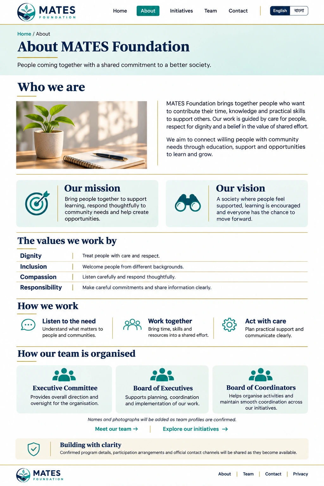

আমাদের লক্ষ্য
শেখার সুযোগ বাড়াতে, সমাজের প্রয়োজনে বিবেচনার সঙ্গে সাড়া দিতে এবং নতুন সম্ভাবনা তৈরি করতে মানুষকে একত্র করা।
সুন্দর সমাজ গড়ার অঙ্গীকার নিয়ে মানুষের একসঙ্গে পথচলা।

যাঁরা নিজের সময়, জ্ঞান ও ব্যবহারিক দক্ষতা দিয়ে মানুষের পাশে দাঁড়াতে চান, তাঁদের একত্র করে মেটস ফাউন্ডেশন। মানুষের প্রতি যত্ন, মর্যাদার প্রতি সম্মান এবং সম্মিলিত প্রচেষ্টার মূল্যবোধ আমাদের পথ দেখায়।
শিক্ষা, সহায়তা এবং শেখার ও এগিয়ে যাওয়ার সুযোগের মাধ্যমে সমাজের প্রয়োজনের সঙ্গে সহযোগিতায় আগ্রহী মানুষকে যুক্ত করাই আমাদের প্রচেষ্টা।
শেখার সুযোগ বাড়াতে, সমাজের প্রয়োজনে বিবেচনার সঙ্গে সাড়া দিতে এবং নতুন সম্ভাবনা তৈরি করতে মানুষকে একত্র করা।
এমন একটি সমাজ, যেখানে মানুষ সহায়তা পায়, শেখার উৎসাহ থাকে এবং সবার এগিয়ে যাওয়ার সুযোগ থাকে।
মানুষ ও সমাজের কাছে কী জরুরি, তা জানার চেষ্টা করি।
সময়, দক্ষতা ও সম্পদ একত্র করে এগিয়ে যাই।
বাস্তবসম্মত সহায়তার পরিকল্পনা করি এবং স্পষ্টভাবে জানাই।
সামগ্রিক দিকনির্দেশনা ও তত্ত্বাবধান।
পরিকল্পনা, সমন্বয় ও বাস্তবায়নে সহযোগিতা।
বিভিন্ন উদ্যোগের কার্যক্রম ও যোগাযোগে সমন্বয়।
পরিচিতি নিশ্চিত হলে সদস্যদের নাম ও ছবি যুক্ত করা হবে।